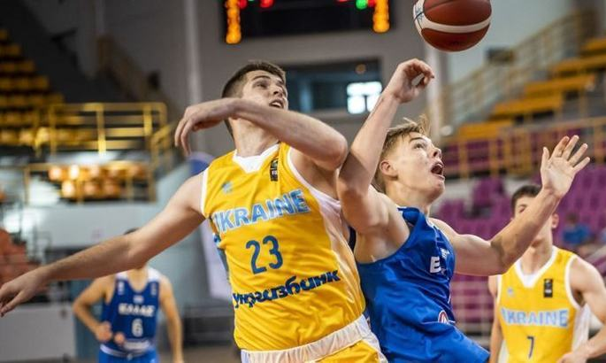

Koszykówka w Ukrainie
Historia rozwoju koszykówki na Ukrainie.
Historia rozwoju ukraińskiej koszykówki zaczyna się dopiero po Wielkiej Socjalistycznej Rewolucji Październikowej. Partia i rząd zawsze przywiązywały wielką wagę do rozwoju radzieckiego ruchu kultury fizycznej. Przy klubach związkowych, Towarzystwie Dynama, aw wojsku zaczęto organizować kluby i sekcje kultury fizycznej, w tym koszykówki. W 1959 roku powstał Związek Towarzystw i Organizacji Sportowych ZSRR. Głównym zadaniem Związku był dalszy rozwój masowej kultury fizycznej młodzieży. W tym samym roku powstały federacje różnych dyscyplin sportowych. Obok lekkoatletyki i gimnastyki do programu kultury fizycznej szkoły wprowadzono koszykówkę, siatkówkę i piłkę ręczną. W szkolnych sekcjach koszykówki młodzi koszykarze szkolili się i brali udział w różnych konkurencjach. Większość z nich osiągnęła wielkie umiejętności i została mistrzami Europy, świata i igrzysk olimpijskich. W ośmiu letnich i jednej zimowej olimpiadzie (1952–1980) wzięło udział łącznie 446 sportowców z Ukrainy. Reprezentowali 27 miast. U18 z nich byli szkolonymi mistrzami olimpijskimi. Na Ukrainie szkolono 43 mistrzów olimpijskich w poszczególnych konkurencjach. Zdobyli 61 indywidualnych i 19 drużynowych złotych medali. Sportowcy Ukraińskiej SRR przynieśli łącznie 142 złote medale olimpijskie do radzieckiego sportu. Działając w ramach narodowej kadry olimpijskiej kraju, wychowankowie organizacji sportowych Ukrainy zdobywali również złote medale w koszykówce.
Reprezentacja Ukrainy w koszykówce
Reprezentacja Ukrainy w koszykówce jest narodową drużyną Ukrainy w koszykówce , zarządzaną przez Federację Koszykówki Ukrainy . W 1992 roku reprezentacja rozegrała swój pierwszy oficjalny mecz z Anglią 30 maja 1993 roku. Najwyższym osiągnięciem w oficjalnych zawodach międzynarodowych jest 6. miejsce na Mistrzostwach Europy 2013 . Uczestnik Mistrzostw Świata 2014 w Hiszpanii .
